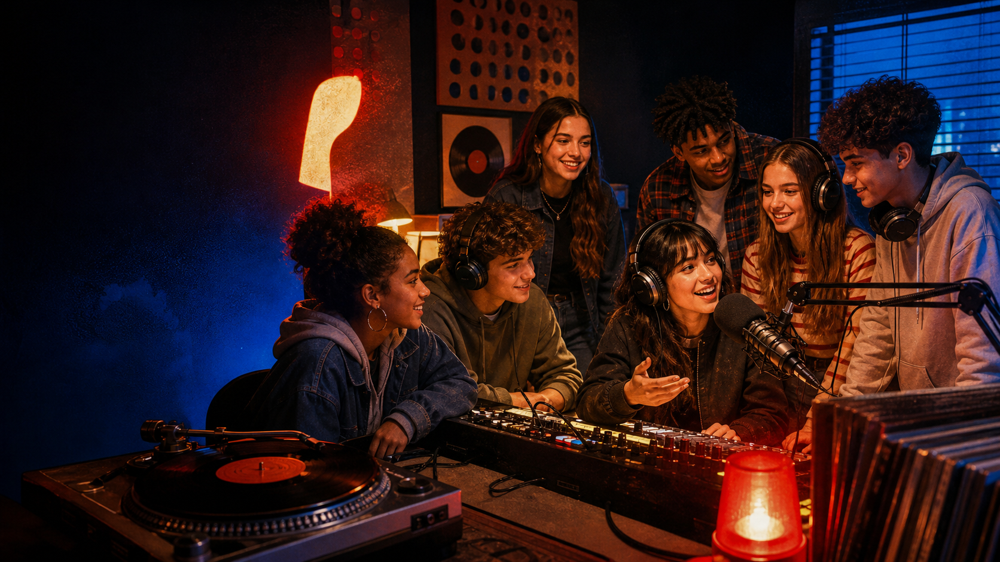
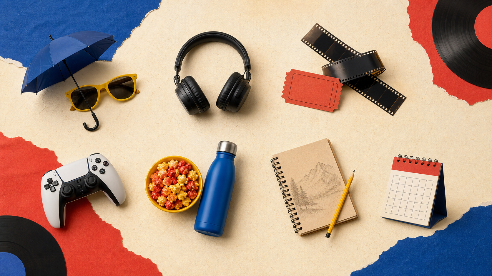
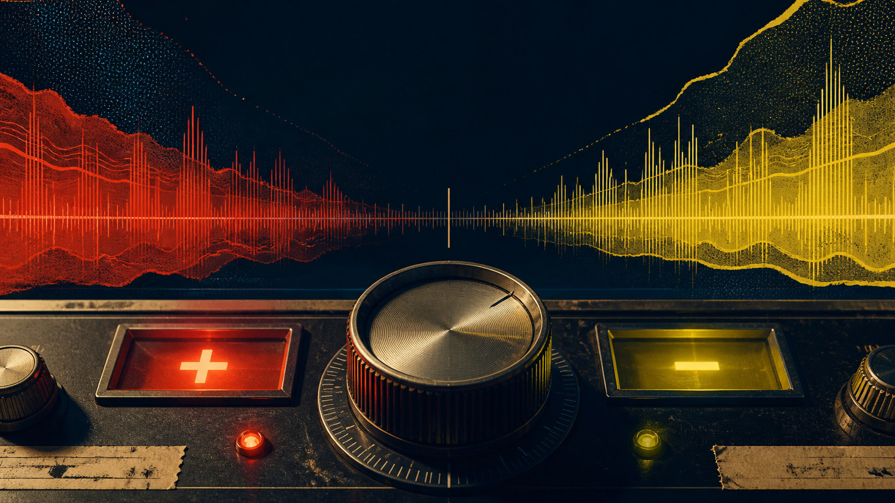
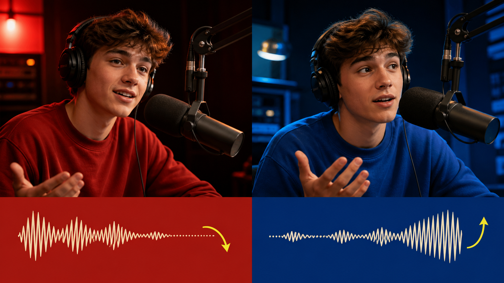
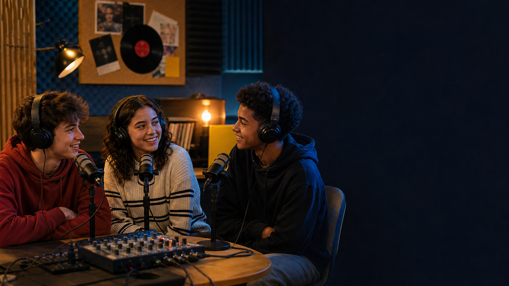
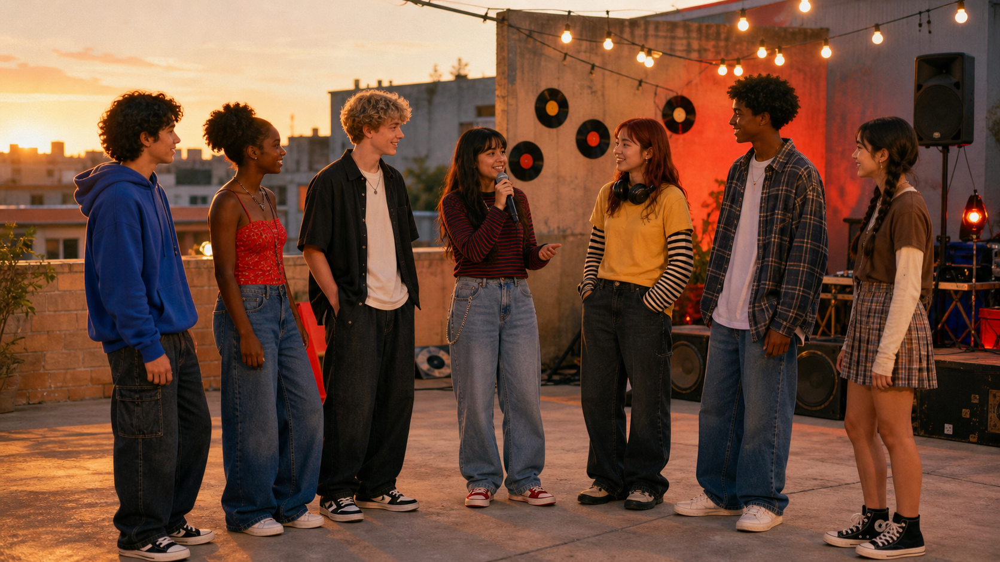

Lesson 26 · Question tags + small talk
KEEP THE
CONVERSATION
ON AIR.
Use a short tag to check, connect, and invite another person to respond.
WHAT MAKES
A CONVERSATION
FEEL EASY?
iChoose one. Give a real or imaginary example: “A conversation feels easy when…”
Seven people can choose seven different strengths.
02 · REAL-LIFE SIGNAL
THEY HAVE
JUST MET.
Which line sounds natural here?
Choose a line, then explain why it fits or does not fit.

04 · SMALL-TALK TOPICS
START WITH
WHAT YOU
CAN SHARE.
Choose a topic to reveal a natural opener.
SMALL TALK NEEDS
FOUR MOVES.
iClick the four moves in order. Then repeat the pattern with music, films, or weekend plans.
A tag invites a response; a follow-up develops it.
A QUESTION TAG IS A
MINI-QUESTION AFTER A STATEMENT.
“The meeting starts at four, doesn't it?”
I think this is true, but I want confirmation.“That song is catchy, isn't it?”
I expect you may agree with my opinion.“It's quieter here, isn't it?”
This is warmer than asking a sudden direct question.iFor each example, say what the speaker wants: information, agreement, or a friendly start.

07 · THE MAIN RULE
OPPOSITES
CONNECT.
You like this song, don't you?
She isn't late, is she?
IF THE MAIN VERB IS
BE, REPEAT BE.
FORM: am / is / are / was / were + pronoun
ORDINARY VERB?
CALL DO.
LOOK FOR: present habit → do/does · finished past → did
A HELPER ALREADY
EXISTS. REUSE IT.
RULE: copy the helper, switch positive/negative, then add a pronoun.
THE TAG USES
A PRONOUN.
Maya is ready, isn't she?
The boys play here, don't they?
This song is new, isn't it?
Those lights work, don't they?
There's a studio upstairs, isn't there?
THREE PATTERNS
TO REMEMBER.
I'M LATE, AREN'T I?not “amn't I?”
LET'S START, SHALL WE?a suggestion together
OPEN THE CHAT, WILL YOU?a friendly request
FIND THE HELPER
BEFORE THE TAG.
iOne line per student: name the grammar signal, predict the tag, then click to check.
TWO CHOICES.
ONE CLEAN SIGNAL.
The café closes at eight,
Nora isn't in class,
Those films were funny,
You haven't finished,
0 / 4 correct. Explain each choice before you click.
HEAR THE STATIC.
FIX THE SIGNAL.
iSay what is wrong: helper, positive/negative switch, or pronoun. Then click to repair.

“Great show, wasn't it?”
“The show starts at six, doesn't it?”
WHAT DOES THE
SPEAKER MEAN?
It was brilliant, wasn't it?
It starts at four, doesn't it?
Long day, wasn't it?
The password changed, didn't it?
This track is better, isn't it?
We're in Studio B, aren't we?
That was fun, wasn't it?
Choose an arrow for each context.
THE TAG IS
SHORT + LIGHT.
It's COLD today, isn't it?
You LIKE this song, don't you?
Maya FINISHED, didn't she?
They can JOIN us, can't they?

19 · LISTENING
WHO IS NEW
TO THE STUDIO?
- Predict one safe topic.
- Listen for four question tags.
- Notice one follow-up question.
SEVEN LISTENERS.
SEVEN DETAILS.
iOne question per student. Answer in a full sentence, then click to check.
WHAT KEEPS THE
CONVERSATION MOVING?
LINA You're new to the media club,
SAM Yes, I joined on Monday. The studio looks amazing.
LINA It does, You've used a mixer before,
SAM Not this kind. I can learn quickly,
LINA Of course. You like music,
SAM Mostly hip hop and film soundtracks.
Find five tags and two follow-up questions.
SEVEN SIGNALS.
HOW MANY ARE CLEAN?
She's your cousin, ___?
They study here, ___?
He didn't text, ___?
You've met Ana, ___?
We can start, ___?
Let's record, ___?
I'm first, ___?
SCORE 0 / 7
A GOOD OPENER
DOES NOT STOP
AT THE TAG.
1 · NOTICEThe school festival starts today.
2 · TAGIt looks busy, doesn't it?
3 · ANSWERYes, especially near the music stage.
4 · DETAILMy friend's band is playing there.
5 · FOLLOW UPReally? What kind of music do they play?
6 · RETURNMostly rock. How about you?
7 · CONTINUEI like pop, but I want to hear the bands.
EVERYONE HAS
A DIFFERENT SIGNAL.
iOpen your number. Start with a statement + tag. Your partner answers, adds detail, and asks a follow-up.

25 · FINAL PRODUCTION
SEVEN VOICES.
ONE LIVE SHOW.
GO LIVE.
Use one shared topic. Keep the conversation moving without reading a script.
iAll seven students speak. The listeners count language, not mistakes in ideas.
WHAT CAN YOU
DO NOW?
Choose one line and complete it with a real example.
HOMEWORK · RECORD A 45-SECOND CHAT
- Choose one safe topic.
- Write three statements with accurate tags.
- Use one falling and one rising tag.
- Add two follow-up questions.
- Record both voices or perform with a partner.